ടിക്... ടിക്... ടിക്...
8
ടിക്... ടിക്... ടിക്...
സമയം 3 മണി ആയി. 4 മണിക്കല്ലേ പ്രദർശനം.


ടിക്... ടിക്... ടിക്...
8
ടിക്... ടിക്... ടിക്...
സമയം 3 മണി ആയി. 4 മണിക്കല്ലേ പ്രദർശനം.


ഗണിതം സ്റ്റാൻഡേർഡ് - III
സർക്കസ് കൂടാരത്തിലേക്ക്
പ്രദർശനസമയം
ഉച്ചയ്ക്ക് 1 മണി വൈകിട്ട് 4 മണി, 7 മണി അവധി ദിവസങ്ങളിൽ പ്രത്യയേക ഷോോ രാവിലെ 10 മണി രാത്രി 11 മണി
സർക്കസ് കൂടാരം കണ്ടില്ലേ ? പ്രദർശന സമയം നോോക്കൂ... • അവധി അല്ലാത്ത ദിവസങ്ങളിൽ ആദ്യ പ്രദർശനം തുടങ്ങുന്നത് എത്ര മണിക്കാണ് ? • അവധി ദിവസത്തെ പ്രത്യയേക പ്രദർശനം ഏതെല്ലാം സമയത്താണ് ? • അവധി ദിവസം എത്ര പ്രദർശനമുണ്ട് ? • അവധി ദിവസത്തെ പ്രദർശന സമയം ക്രമത്തിൽ എഴുതൂ...
114


ടിക്... ടിക്... ടിക്...
സമയം നോോക്കി അഭിനയിക്കാം ഓരോോ ദിവസവും നിങ്ങൾ ചെയ്യുന്ന കാര്യങ്ങൾ എന്തെല്ലാം ? അത് ഏതെല്ലാം സമയങ്ങളിലാണ് ചെയ്യുന്നത് ? • രാവിലെ ഉണരുന്നു
•
• പല്ല് തേക്കുന്നു
•
•
•
• സ്കൂളിൽ പോോകുന്നു
• രാത്രി ഉറങ്ങുന്നു
താഴെ തന്നിട്ടുള്ള സമയങ്ങളിൽ നിങ്ങൾ ചെയ്യുന്ന കാര്യയങ്ങൾ അഭിനയിച്ച് കാണിക്കൂ... • രാവിലെ 6 മണി
• ഉച്ചയ്ക്ക് 1 മണി
• രാവിലെ 7 മണി
• വൈകിട്ട് 4 മണി
• രാവിലെ 10 മണി
• രാത്രി 9 മണി
സമയമെത്രയായി ? തൻവിയുടെ ക്ലാസ് തുടങ്ങിയ സമയമാണ് ക്ലലോക്കിൽ. മിനിറ്റ് സൂചി 12 ലും മണിക്കൂർ സൂചി 10 ലും ആണ്. സമയം 10 മണി. ചെറിയ സൂചി മണിക്കൂർ സൂചിയും വലിയ സൂചി മിനിറ്റ് സൂചിയും ആണ്.
115


ഗണിതം സ്റ്റാൻഡേർഡ് - III
മുത്തശ്ശിയെ കാണാൻ തൻവീ... നാളെ മുത്തശ്ശിയെ കാണാൻ പോോകുവല്ലേ... രാവിലെ എണീക്കണേ... ഹായ്... നാളെ മുത്തശ്ശിയെ കാണാലോോ...
തൻവി നേരത്തേ ഉണർന്നു. തൻവി ഉണർന്ന സമയം
116


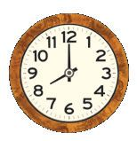
ടിക്... ടിക്... ടിക്...
ആഹാരം കഴിക്കുമ്പപോൾ ഇപ്പപോൾ സമയം എത്രയാണ് ? മിനിട്ട് സൂചി ഒരു തവണ കറങ്ങാൻ 60 മിനിറ്റ്. അതായത് ഒരു മണിക്കൂർ.
മണിക്കൂർ സൂചി 7 നും 8 നും നടുക്ക്. മിനിറ്റ് സൂചി 6 ന് നേരെ. സമയം 7 മണി 30 മിനിറ്റ്.
ഏഴര എന്നും പറയും.
പുറപ്പെടാം ബസ് വരാറായി. നേരത്തേ പുറപ്പെട്ടാൽ വൈകാതെ എത്താം.
തൻവി വീട്ടിൽ നിന്നും പുറപ്പെടുന്ന സമയം 117


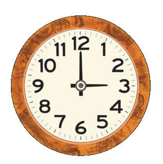
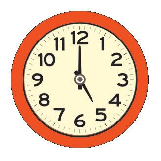
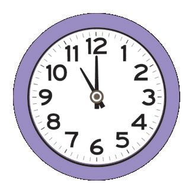
ഗണിതം സ്റ്റാൻഡേർഡ് - III
മുത്തശ്ശിയുടെ വീട്ടിൽ ഈ സമയത്തെ ഒൻപതര എന്നും പറയും.
തൻവി മുത്തശ്ശിയുടെ വീട്ടിൽ എത്തിയ സമയം നോോക്കൂ... സമയം എഴുതൂ... .......... മണി .......... മിനിറ്റ്
എന്റെ മക്കള് വന്നല്ലലോ...
ഹായ്... മുത്തശ്ശീ...
ക്ലലോക്കും സമയവും നോോക്കി പൂരിപ്പിക്കുക. 1
2
3
4
5
A
B
C
D
E
11 മണി
7 മണി
10 മണി
5 മണി
2
3
4
5
3 മണി 1
–
C
–
–
118
–
–


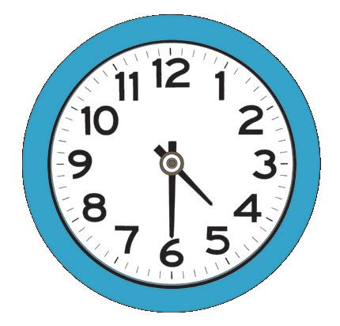
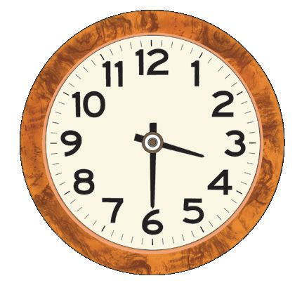
ടിക്... ടിക്... ടിക്...
പട്ടിക പൂർത്തിയാക്കുക. മണിക്കൂർ സൂചി
മിനിറ്റ് സൂചി
സമയം
11 ന് നേരെ
12 ന് നേരെ
11 മണി
8 മണി
1:30
സമയം നോോക്കി സൂചികൾ വരയ്ക്കൂ. 6 മണി
5:30
119

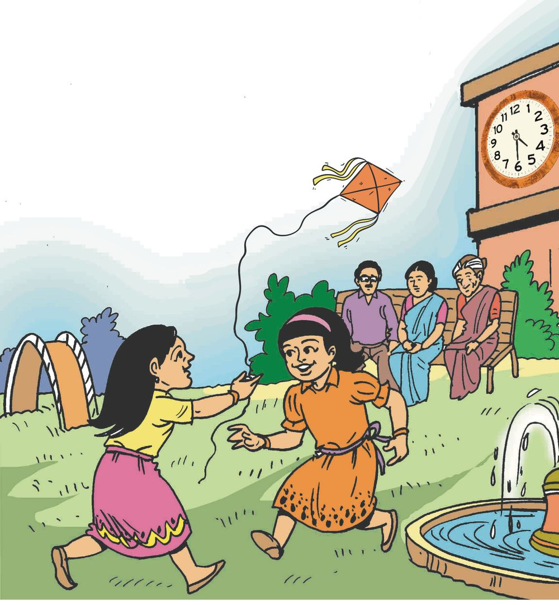
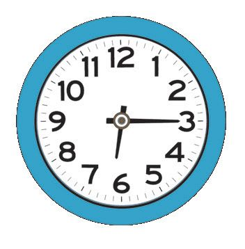
ഗണിതം സ്റ്റാൻഡേർഡ് - III
പാർക്ക് തൻവി ഇപ്പപോൾ പാർക്കിലാണ്. സമയം എത്രയായി ? ....... മണി ....... മിനിറ്റ്
തൻവി പാർക്കിൽ നിന്നും ഇറങ്ങുന്ന സമയമാണ് ക്ലലോക്കിൽ. മണിക്കൂർ സൂചി 6 കഴിഞ്ഞും മിനിറ്റ് സൂചി 3 ലും ആണ്. സമയം 6 മണി 15 മിനിറ്റ്.
120
ആറേകാൽ എന്നും പറയും.

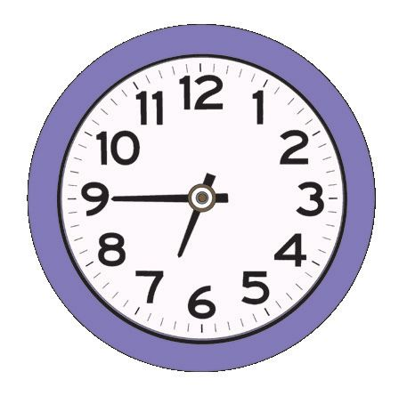
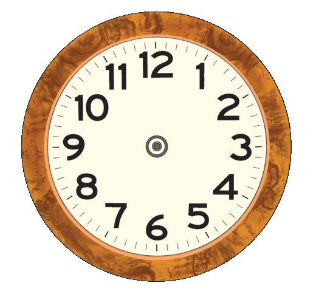
ടിക്... ടിക്... ടിക്...
തൻവി പാർക്കിൽ നിന്നും മുത്തശ്ശിയുടെ വീട്ടിൽ തിരിച്ചെത്തിയ സമയം നോോക്കൂ...
മണിക്കൂർ സൂചി 6 ൽ നിന്ന് 7 ന് അടുത്തേക്ക് എത്തിയിരിക്കുന്നു. മിനിറ്റ് സൂചി 9 ലും. സമയം എത്രയായി ? 6 മണി 45 മിനിറ്റ്.
ഈ സമയത്തെ ആറേമുക്കാൽ എന്നും പറയും.
സമയം നോോക്കി സൂചികൾ വരച്ച് പട്ടിക പൂർത്തിയാക്കുക. 10:30
10:45
11:15
പത്തര
പത്തേമുക്കാൽ
പതിനൊൊന്നേകാൽ
11:45
12:15
12:30
.........................................
.........................................
.........................................
121


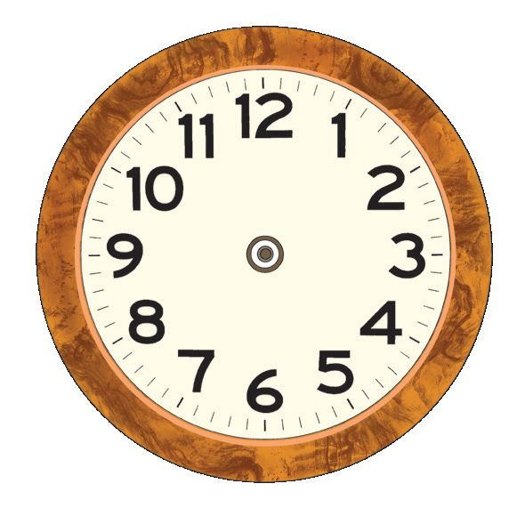
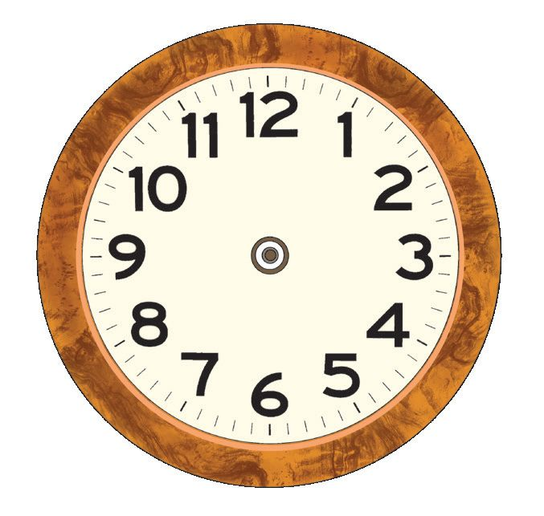
ഗണിതം സ്റ്റാൻഡേർഡ് - III
എന്റെ വിദ്യയാലയം അടുത്ത ദിവസം തൻവി സ്കൂളിലെത്തി
ഇപ്പപോൾ സമയം ........................ . ഈ സമയം ക്ലലോക്കിൽ വരയ്ക്കൂ.
തൻവി സ്കൂളിൽ എത്തി അര മണിക്കൂർ കഴിഞ്ഞാണ് ക്ലാസ് തുടങ്ങിയത്. ക്ലാസ് തുടങ്ങിയ സമയം .................... മണി
സമയം ഡിജിറ്റലായി കാണുന്നതുപോോലെ എഴുതൂ... ക്ലാസ് തുടങ്ങി 15 മിനിറ്റ് കഴിഞ്ഞുള്ള സമയം ക്ലലോക്കിൽ വരയ്ക്കൂ.
122

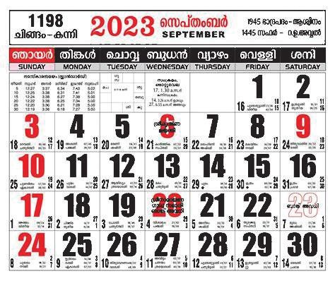
ടിക്... ടിക്... ടിക്...
ആദിത്യ തൻവി വായിച്ച വാർത്ത നോോക്കൂ.. സൂര്യനെക്കുറിച്ച് പഠിക്കാൻ ഐ.എസ്.ആർ.ഒ. വിക്ഷേപിച്ച ബഹിരാകാശപേടകമാണ് ആദിത്യയ L1 വിക്ഷേപണം 2023 സെപ്തംബർ 2 ഈ ദിവസം കലണ്ടറിൽ അടയാളപ്പെടുത്തൂ...
• സെപ്തംബർ 5 മുതൽ 23 വരെ എത്രദിവസം ?
ഇന്നലെ... ഇന്ന്... നാളെ... ഇന്നത്തെ തീയതി ക്ലാസിലെ കലണ്ടറിൽ ഈ തീയതി അടയാളപ്പെടുത്തൂ. ഏത് മാസമാണിത് ? ഇന്ന് ആഴ്ചയിലെ ഏത് ദിവസമാണ്? ഇന്നലെ ഏത് ദിവസമായിരുന്നു ? നാളെ ഏത് ദിവസമാണ് ? ഈ മാസം ഒന്നാം തീയതി ഏത് ദിവസമാണ് ? ഈ മാസത്തെ അവസാന ദിവസം ഏതാണ് ? 123

ഗണിതം സ്റ്റാൻഡേർഡ് - III
ജന്മദിനം നിങ്ങളുടെ ജന്മദിനം ഈ വർഷത്തെ കലണ്ടറിൽ അടയാളപ്പെടുത്തൂ... നിങ്ങളുടെയും കൂട്ടുകാരുടെയും ജന്മദിനങ്ങൾ കലണ്ടറിൽ നോോക്കി ചാർട്ടിൽ എഴുതൂ... ക്ലാസിൽ പ്രദർശിപ്പിക്കൂ...
കലണ്ടർ നോോക്കൂ... ഉത്തരം കണ്ടുപിടിക്കൂ. • വർഷം ആരംഭിക്കുന്ന മാസം ഏതാണ് ? • ഈ വർഷം ജനുവരി ഒന്ന്
ഏത് ദിവസമാണ് ?
• ജനുവരി 31 ഏത് ദിവസമാണ് ?
പൂർത്തിയാക്കൂ. ഞായർ, തിങ്കൾ, ......................................, ......................................, ......................................, ......................................, ......................................, • ഈ വർഷം ആഗസ്റ്റ് 15 ഏത്
ദിവസമാണ് ?
• ദേശീയ ഗണിതശാസ്ത്ര ദിനം ഡിസംബർ 22 ആണ്. ഈ ദിവസം
കലണ്ടറിൽ അടയാളപ്പെടുത്തൂ... • മാസങ്ങളുടെ പേര് ക്രമത്തിൽ എഴുതൂ...
124


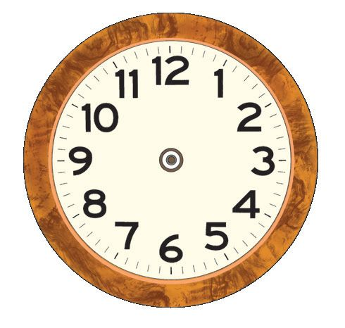
ടിക്... ടിക്... ടിക്...
വിലയിരുത്തൽ പ്രവർത്തനങ്ങൾ 1. ക്ലലോക്കും സൂചിയും
തന്നിരിക്കുന്ന സമയം നോോക്കൂ... മണിക്കൂർ സൂചിയും മിനിറ്റ് സൂചിയും ക്ലലോക്കിൽ വരയ്ക്കൂ...
1:00 മണി
9:45 മണി
2:30 മണി
9:15 മണി
2. മാസങ്ങൾ
ഓരോോ മാസത്തിലെയും ദിവസങ്ങളുടെ എണ്ണം പരിശോോധിച്ച് താഴെ തന്നിട്ടുള്ള ചോോദ്യങ്ങൾക്ക് ഉത്തരം എഴുതൂ... •
30 ദിവസം മാത്രമുള്ള മാസങ്ങൾ ഏതെല്ലാം ?
•
31 ദിവസമുള്ള മാസങ്ങൾ ഏതെല്ലാം ?
125

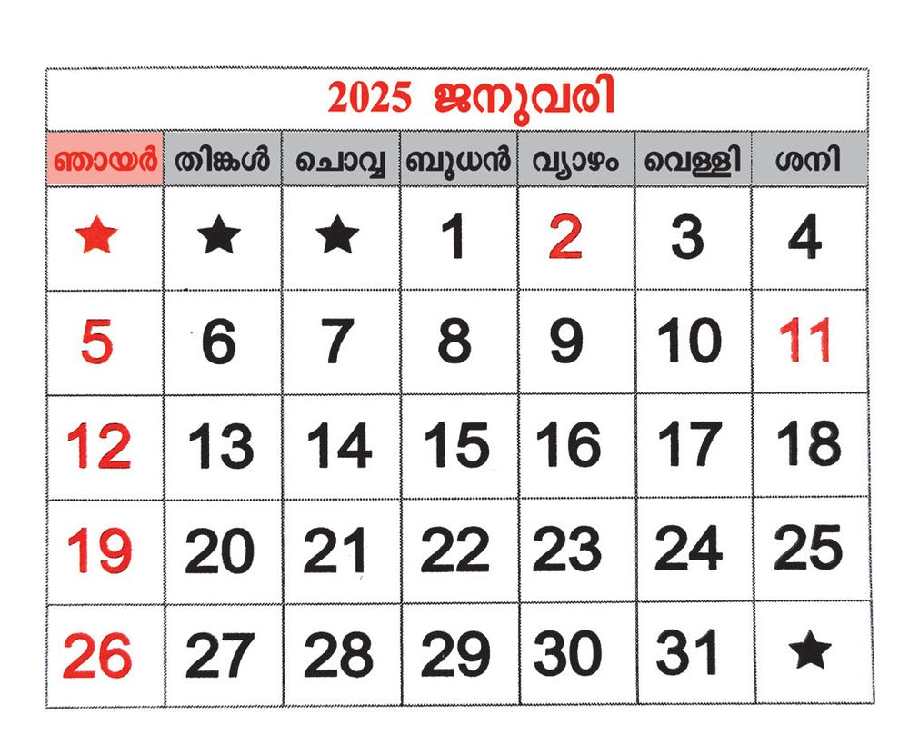
ഗണിതം സ്റ്റാൻഡേർഡ് - III
3. കലണ്ടർ നോോക്കാം
കലണ്ടർ നോോക്കൂ... ഉത്തരം എഴുതൂ...
• തന്നിരിക്കുന്ന കലണ്ടർ
ഏത് വർഷത്തെയാണ് ?
• മാസം ഏതാണ് ?
• ഈ മാസം എത്ര ദിവസം ഉണ്ട് ? • തൊൊട്ടുമുമ്പുള്ള മാസം ഏതാണ് ? • ആ മാസത്തെ അവസാനദിവസം ഏതാണ് ? • ഈ മാസത്തെ ആദ്യയ ദിവസം ഏതാണ് ? • ഈ മാസത്തെ ഏതെല്ലാം തീയതിയിലാണ് 'ഞായറാഴ്ച ' വരുന്നത് ?
• 1, 8, 15, 22, 29 എന്നീ തീയതികൾ വരുന്ന ദിവസം ഏതാണ് ?
• അടുത്തമാസം ഏതാണ് ? • അടുത്തമാസത്തെ ആദ്യദിവസം ഏതാണ് ? • മറ്റന്നാൾ 'ശനിയാഴ്ച ' ആണെങ്കിൽ ഇന്നലെ ഏത് ദിവസമായിരുന്നു ?
• റിപ്പബ്ലിക് ദിനം കലണ്ടറിൽ അടയാളപ്പെടുത്തുക. 126